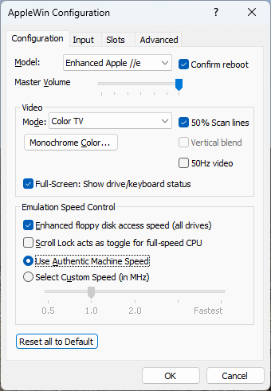

Configuration Settings

Model:
This describes the mode of emulation. You have the option of emulating
the predecessors of the Apple //e: the Apple ][ and Apple ][+. Besides running
with a different Apple system ROM, some differences are discussed below.
- Apple ][ : 48K non-autostarting, Integer BASIC, no lower-case, no 80-column, 6502 CPU
- Apple ][+ : 64K autostarting, Applesoft BASIC version of the Apple ][
- Apple ][ J-Plus : 64K autostarting, Applesoft BASIC, Japanese version of the Apple ][+
- Apple //e : 128K machine, lower-case, 80-column, 6502 CPU
- Enhanced Apple //e : 128K machine, lower-case, 80-column, 65C02 CPU
- Clone (specific model selectable from Advanced page)
Confirm reboot:
Show "Confirm reboot" message box when F2 is pressed.
Master Volume:
Set the volume for the speaker and any sound cards.
Video:
AppleWin can display Apple video in a variety of modes. The display can also be
run in a standard window or full-screen. This option describes the type of
video emulation to be used for the emulator. The differences are
discussed below.
- Monochrome (custom) : This mode emulates a monochrome monitor.
You can choose your monochrome color from the Monochrome Color button described below.
- Color (Composite Idealized) : This mode emulates an idealized composite color monitor.
Text is sharp like a white monochrome monitor. Color graphics has only 16 colors (with no blurring or ringing). This is the only mode that supports vertical blend.
- Color (RGB Card/Monitor) : This mode emulates a standard RGB card and monitor.
Text is sharp like a white monochrome monitor. Color graphics has only 16 colors (with no blurring or ringing). Double hi-res is 140x192 chunky pixels (or software selectable as: B&W or mixed Color/B&W). From the command line you can specify the RGB card, the default is the Extended 80-Column Text/AppleColor Adaptor Card. Some double hi-res titles may have compatibility issues. See troubleshooting.
- Color (Composite Monitor) : This mode emulates a standard NTSC (or PAL) color monitor.
Text is sharp, but contains color artifacts. Color graphics has visible alternating color and black pixels.
- Color TV : This mode emulates an NTSC color TV.
All text and color graphics modes are blurry and have visible ringing.
- B&W TV : This mode emulates an NTSC black and white TV.
- Monochrome (Amber/Green/White) : Monochrome with specified color.
Monochrome Color:
This is the color to use when you choose a monochrome video mode.
50% Scan lines:
Only draw alternate scanline (for better monitor authenticity).
Vertical blend:
When video mode is 'Color (Composite Idealized)' then vertically blend the hi-res screen.
50Hz video:
When checked, this option will run the emulated machine with a 50Hz(PAL) video refresh rate.
The default is unchecked, for 60Hz(NTSC).
Full-Screen: Show drive/keyboard status:
When in full-screen mode, show floppy (activity and track) and harddisk status (activity); keyboard caps-lock status and if emulation is paused.
Emulation Speed Control:
Enhanced disk access speed:
Here you can choose the speed at which the system can access
an emulated floppy disk drive.
By default, you would want "Enhanced Speed" so that data can
be accessed as fast as possible. However, it is also possible that
certain programs might depend on the "Authentic Speed" to function
properly. This is the speed at which the real hardware
would access data from your drives.
Scroll Lock acts as toggle for full-speed CPU:
- When checked, you can permanently enable full-speed CPU when Scroll Lock is on.
- When unchecked, only when Scroll Lock is depressed will you get full-speed CPU.
Select Custom Speed (in MHz):
This option let's you control the processor speed of the emulated system. You
may choose to use an authentic speed (matching the speed of the original
processor from the system) or you can underclock or overclock the emulated
processor speed from half-speed to as fast as your PC can emulate.
Reset all to Default:
Reset all configuration across all configuration pages to the default values.